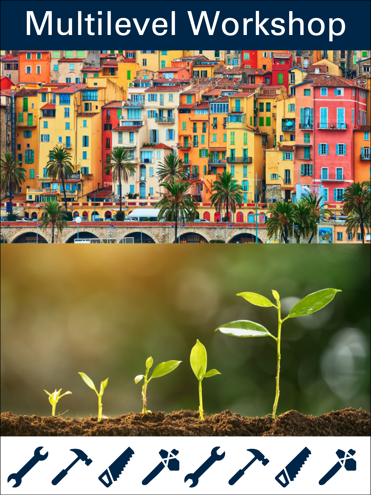

Multilevel Workshop
1 Introduction

This site contains materials for a workshop on multilevel modeling.
1.1 Background
Multilevel models are useful when you have data that are nested or clustered inside social units such as schools, neighborhoods, states, or countries.
Multilevel models are also useful when you have longitudinal data where repeated measures are collected for study participants.
1.2 Simulated Multilevel Data
The data used in these workshop materials are simulated data on parents, children and families. The data are simulated to come from 30 hypothetical countries around the world. These are the same data used and discussed in my book Multilevel Thinking: Discovering Variation, Universals, and Particulars in Cross-Cultural Research.
There are two versions of the data: a cross-sectional data set from a single point in time; a longitudinal version of the data spanning several time points.
The Data Can Be Downloaded Here:
| pos | variable | label |
|---|---|---|
| 1 | country | country id |
| 2 | HDI | Human Development Index |
| 3 | family | family id |
| 4 | id | unique country family id |
| 5 | identity | hypothetical identity group variable |
| 6 | intervention | recieved intervention |
| 7 | physical_punishment | physical punishment in past week |
| 8 | warmth | parental warmth in past week |
| 9 | outcome | beneficial outcome |
| country | HDI | family | id | identity | intervention | physical_punishment | warmth | outcome |
|---|---|---|---|---|---|---|---|---|
| 22 | 86 | 79 | 22.79 | 0 | 0 | 3 | 2 | 44.56 |
| 11 | 33 | 4 | 11.4 | 0 | 0 | 2 | 5 | 44.01 |
| 19 | 72 | 12 | 19.12 | 0 | 0 | 2 | 6 | 37.24 |
| 20 | 58 | 43 | 20.43 | 1 | 1 | 2 | 3 | 46.35 |
| 22 | 86 | 97 | 22.97 | 0 | 0 | 3 | 4 | 56.14 |